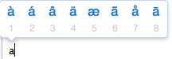
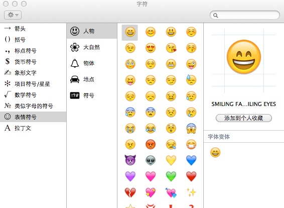
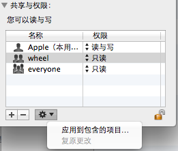
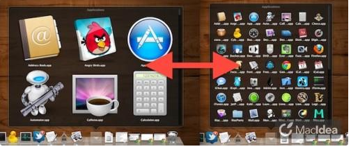

Mac操作技巧
如何在Mac下隐藏文件
1 建一个文件夹，命名为任何形式的加点PKG的格式。比如MacOSX.pkg或者office.pkg。反正意思就是用一个别人轻易不会去点的文件名称。
2 命名完之后，这个文件夹就会自动显示为一种黄色的安装包文件。
3 再然后用右键菜单的show package contents打开这个安装包。
4 接着你就可以随心所欲的放心往这里拖片或者其他东西咯。
5 一般不用担心，别人就算点了这个文件，也不会打开的。因为双击他压根就打不开。
OS内置的PDF格式转换
在苹果系统中，使用者可以免费将几乎所有的文件转换为PDF格式。
1 打开需要转换为PDF格式的文件。
通过按键盘上的组合键Command + P打开打印对话框，在对话框的底部单击“PDF”按钮，在下拉菜单中选择“存储为PDF”，在弹出的对话框中输入文件名称，按回车键即可完成文件格式转换=w=～
在ICal中显示农历、节日、天气、推特Tweets等
打开iCal➝日历➝订阅➝输入一下网址
中国农历：
webcal://ical.mac.com/ical/China32Lunar32Simplified32Holidays.ics
中国节日：
webcal://ical.mac.com/ical/China32Public32Holidays.ics
更多日历：尽在谷歌日历，里面有各国家地区的特殊节日，还有体育订阅等，你可以按需订阅，然后在谷歌日历的下拉箭头找到“日历设置”，在下面点 iCal 的按钮图标即可得到个地址，在 iCal 中订阅即可，Enjoy~(酷酷)删除日历，只需在日历名字上右键删除即可~
用所选项目新建文件夹
一次选中多个文件后激活辅助点按（鼠标右键）后，可以在下拉菜单中选择该选项，会自动在当前目录或用户目录下新建一个文件夹，并将选中的文件自动移动至该文件夹内。
利用键盘移动文件
1 选择你需要移动的文件后，按下键盘的「Command」+「C」。
2 然后在目的目录下按下「Command」+「Option」+「V」，就实现了文件移动。
系统的截屏功能
1 按下「Shift」+「Command」+「3」将会截取整个屏幕并储存到桌面。或者「Shift」+「Command」+「Control」+「3」，将会将截取的整个屏幕保存到剪切板。
2 按下「Shift」+「Command」+「4」可框选屏幕部分并储存到桌面：
1）在此基础上按下「空格」可以直接选取某一窗口截取并储存到桌面。
2）同样在上述的基础上按住「Shift」可以固定选框的长或宽，按住「Option」将会对称地放大或缩小选框。
3 按下「Shift」+「Command」+「Control」+「4」时，会将截取的屏幕保存到剪切板。——在此基础上按下「空格」可以直接选取某一窗口到剪贴板。
系统的最小音量
1 首先将系统音量调低，直到自动切换为静音模式为止。
2 然后按下「F10」的静音键，此时会发现系统处于非静音模式，然后这时候你听到的声音是Lion系统能发出的最小音量，此功能适合佩戴较为敏感的耳机的用户。
美国英文输入法的功能
在「美国英文」输入法下面，一直按下键盘上部分单个英文字母会出现Diacritic，并且添加了自动更正功能。如下图：

切换背景显示样式
LauchPad中按下「Command」+「B」可以切换背景显示样式。
Finder窗口常用功能
1 在Finder窗口中，按下键盘上的command键，然后点按工具栏上的标题栏，可弹出一个快捷菜单，该快捷菜单列出了包含当前窗口的父级目录；通过这种方式即可查看当前目录，也可点击父目录中的路径直接定位。
2 在Finder窗口的【文件】菜单中，可以将当前选中的项目添加到边栏。
3 在Finder窗口的【显示】菜单中，可以设置路径栏，状态栏，边栏和工具栏的显示与隐藏。
4 在Finder窗口中，按住optipn键，此时【窗口】菜单中的最小化就变成了全部最小化，这样可以把所有打开的Finder最小化。
Lion的特殊字符
1 通过组合键shift+option+Fn+K，可在文档的任何位置输入标识。
2 在Finder窗口的【编辑】菜单中，可以使用Lion的特殊字符：

设置MAC的自动启动或关闭时间
在系统偏好设置的【节能器->定时...选项】中，可设置MAC的自动启动或关闭时间。
批量修改文档的“共享与权限
假定你需要修改的批量文档在一个文件夹内，鼠标右键点击该文件夹，选择“显示简介”，我们可以在“共享与权限”中增加用户及其对应的权限，但如果需要应用到文件夹中的所有内容，还需点击“应用到包含的项目…”，如下图。这样才会对文件夹内的文档生效。

按住shift，点击窗口最小化或Dock程序的神奇效果
通过上述操作，窗口可以缓慢变小或Dock上的程序缓慢变大。
修改DOCK文件夹网格模式图标大小
Mac 系统 Dock 栏文件夹有：扇状、网格、列表三种显示模式。
其中“网格”模式是应用程序的默认格式，随着安装程序的增多，程序已无法在一页中显示，翻页起来很不方便，可通过“Command – 减小图标大小”方式进行调整
当然，如果喜欢大的图标，可通过“Command + 增大图标大小”。

Note：调整后的状态是可以一直保持的。
两根手指在Dock上轻拍(双击)的效果
如果Dock上的该程序没有开着，则会单独显示一个无任何内容的桌面。
如果Dock上的该程序开着,则会在桌面上单独显示该程序,且之前最小化的也会显示出来。
不切换窗口对后台窗口操作—按住Command直接点击后台窗口
我们经常会遇到一种情况，两个窗口，一个在上，一个在下，通常要对下面的窗口进行操作都会先点一下那个窗口再操作，但有些操作可以不切换：
1 关闭、最小化、最大化：左上角的三个按钮可以直接点击
2 滚动：把光标置于后台窗口上可以直接滚动
点击操作：这个需要配合Command键
比如后台窗口的一些按钮、链接什么的，可以按住Command再点击，这样就可以不切换窗口直接对后台窗口点击。
前两个操作很常见，最后一个我觉得不是很常见吧，不知道是不是我火星了。
常用快捷键
1 cmd+i＝显示文件/文件夹属性
2 cmd+backspace＝移到废纸篓
3 cmd＋T＝新建浏览器标签
4 cmd＋R＝刷新浏览器界面
5 control+Tab=在浏览器中切换标签
6 在Safari中按cmd＋Z，可以恢复最后关闭的标签。（超好用的有木有）
7 cmd+option+d=隐藏dock
全屏后如何调出DOCK
将鼠标指针放到屏幕最下沿，即看不到鼠标的位置， 然后再通过触摸屏单指向下移动指针，Dock就出来了。